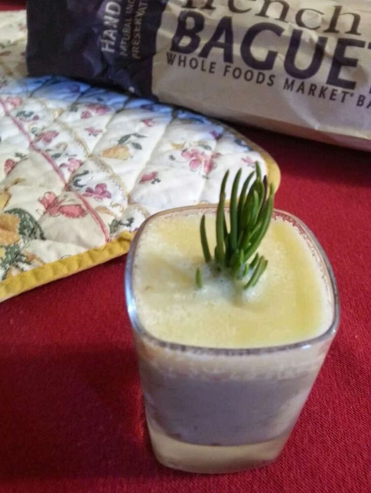

Chicken Pate

Ingredients
- 1 1/2 sticks (3/4 cup) unsalted butter (or half and add melted bone marrow)
- 1 cup finely chopped onion
- 1 large garlic clove, minced
- 1 teaspoon minced fresh thyme or 1/4 teaspoon dried
- 1 teaspoon minced fresh marjoram or 1/4 teaspoon dried
- 1 teaspoon minced fresh sage or 1/4 teaspoon dried
- 3/4 teaspoon salt
- 1/4 teaspoon black pepper
- 1/8 teaspoon ground allspice
- 1 pound chicken livers, trimmed
- 2 tablespoons bourbon (maybe 4…)
- Special equipment: a 2 1/2-cup crock or terrine or several small ramekins
- Accompaniment: crackers or toasted baguette slices
- Garnish: a fresh thyme, marjoram, or sage sprig, or rosemary sprig
Instructions
- Melt 1 stick butter in a large nonstick skillet over moderately low heat, then cook onion and garlic, stirring, until softened, about 5 minutes. Add herbs, salt, pepper, allspice, and livers and cook, stirring, until livers are cooked outside but still pink when cut open, about 8 minutes. Stir in bourbon and remove from heat. Purée mixture in a food processor until smooth, then transfer pâté to crock and smooth top.
- Melt remaining 1/2 stick butter in a very small heavy saucepan over low heat, then remove pan from heat and let butter stand 3 minutes. If using herb garnish, put sprig on top of pâté. Skim froth from butter, then spoon enough clarified butter over pâté to cover its surface, leaving milky solids in bottom of pan.
- Chill pâté until butter is firm, about 30 minutes, then cover with plastic wrap and chill at least 2 hours more.